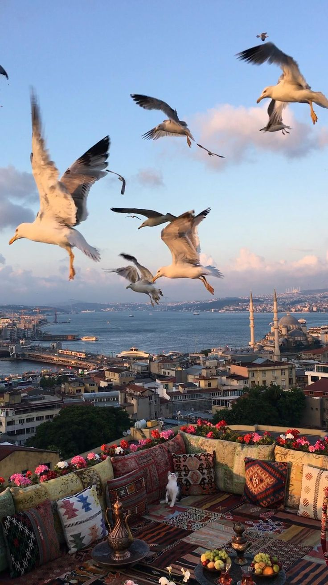
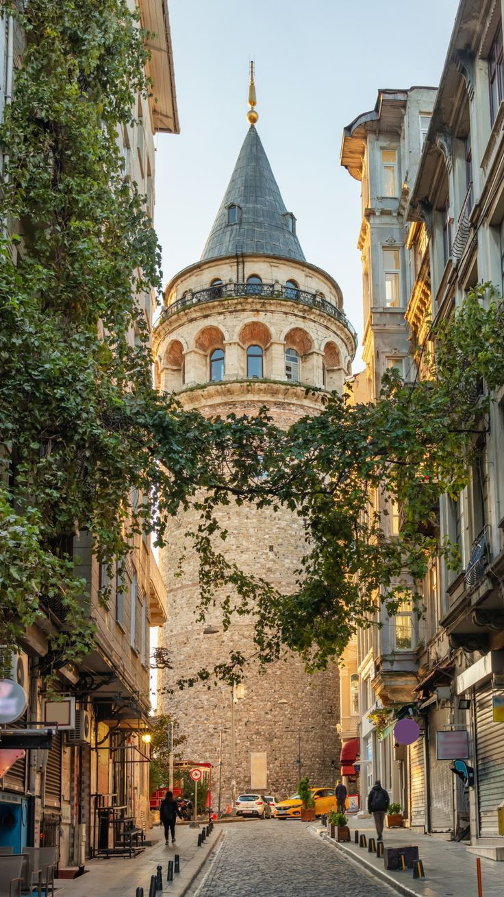

İstanbul
Kıtanın buluştuğu, tarihin aktığı İstanbul'da her adımda bir medeniyet yaşanır.

İstanbul'de bulunan üzüm festivali yapısı, turistlerin ilgisini çeker.
İstanbul mutfağı, özellikle camileri ile ünlüdür.
İstanbul ili, Türkiye'deki en eski yerleşim yerlerinden biridir ve antik kentleri ile tanınır.

Anemas Zindanları
Bizans döneminden kalma, Blakhernai Sarayı'nın bir parçası.

Binbirdirek Sarnıcı
Bizans döneminden kalma ikinci büyük su sarnıcı.

Galata Kulesi
İstanbul'un simgelerinden, 14. yüzyıldan kalma tarihi kule.